三角剖分可以划分为两类问题，一类是对多边形的三角剖分，另一类是对点云的三角剖分。分别如下图所示：
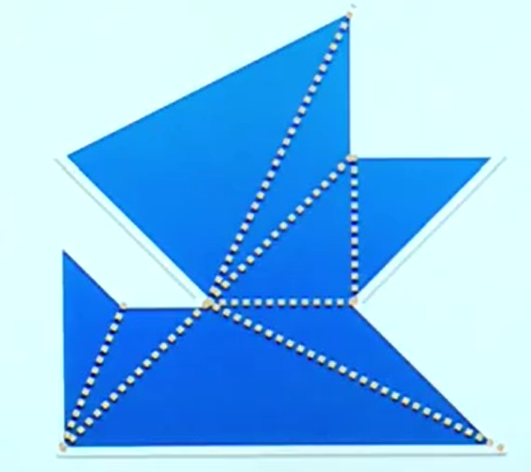 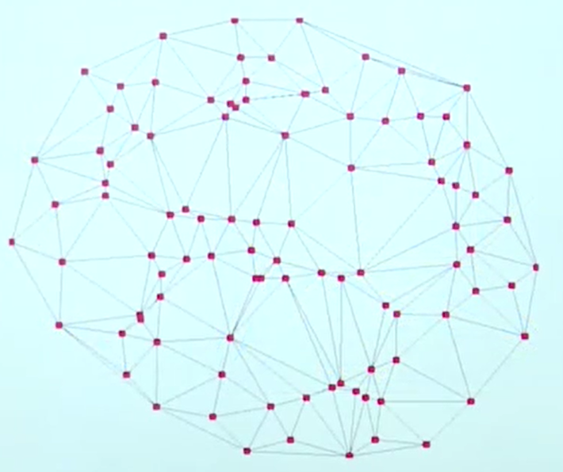
在介绍三角剖分之前，先来引入一个著名的算法问题。一个艺术博物馆，最少需要安装多少个摄像头，才能监控到馆内的每一处？其中每个摄像头的视角都是360°的，但是不能穿墙。例如，下图中的艺术博物馆就需要最少2个摄像头：
\(Art~Gallery~Problem\)在历史上已经被证明为是一个\(NP~hard\)问题，所以我们退一步，考虑另外一个问题：对于任意的\(n\)边形艺术博物馆，最多需要安装多少个摄像头才能监控到每一处？事实上，可以证明最多只需要安装\(\lfloor \frac{n}{3}\rfloor\)个摄像头即可。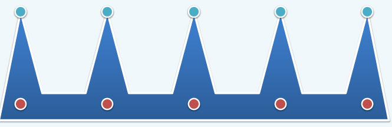
对于第二点的证明，需要三角剖分的辅助。如果一个\(n\)边形中间没有洞，那么它经过三角剖分后得到的新图（下面的左图）的对偶图（下面的中图）一定是一棵树；如果有空洞，那么围绕每个空洞都会形成环（下面的右图）：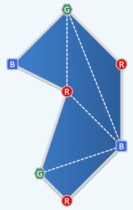 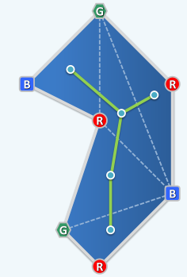 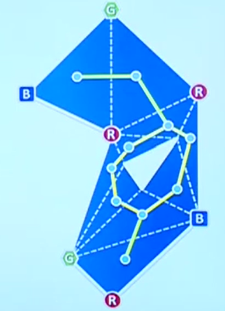
此时可以沿着这棵树对多边形的顶点进行3染色，染色的规则是：有边相连的顶点不能同色。经过染色后，不难看出每个三角形的顶点都会染上不同的颜色。设分别有\(R,G,B\)个点染上了红，绿，蓝色，那么有\(R+G+B=n\)。由抽屉原理，必有一种颜色的点数目不多于\(\lfloor \frac{n}{3}\rfloor\)，不妨设为红色。那么只需要在被染成红色的顶点处安装摄像头即可监测到整个博物馆。上面的证明是基于三角剖分的，但是我们还不知道对于任意的多边形，它的三角剖分是否存在。实际上，即便有空洞，简单多边形的三角剖分也是存在的。简单多边形指的是，它的不连续的边都是不相交的，例如下面的左图就是简单多边形，而剩下的两个都不是：
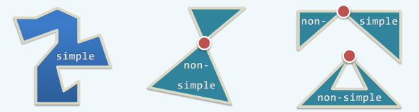
下面就使用归纳法来证明三角剖分的存在性。首先，来定义一种多边形的归纳序，我们称多边形\(A\)小于多边形\(B\)，当且仅当：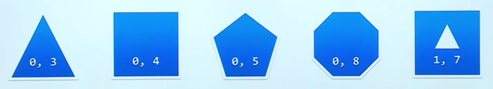
有了序的定义，就可以做出归纳假设了：假设所有小于它的多边形都可以三角剖分。按照归纳法，我们接下来的工作就是把一个多边形分为几个小于它的多边形的组合。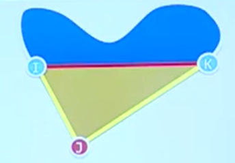
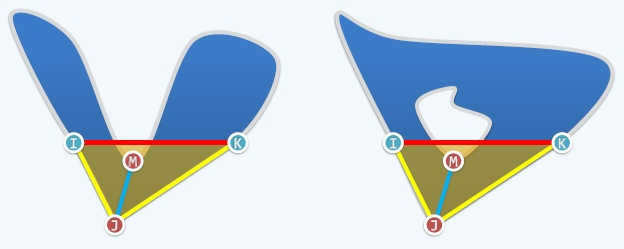
\(2k+n=3(n-2)\)
解得\(k=n-3\)。即产生了\(n-3\)条内对角线。
先来处理一个简单的情况。如果多边形是单调的，那么可以在\(o(n)\)的时间内求出三角剖分。
什么是单调多边形？首先定义单调多边形链：一个点链是单调的，当且仅当存在一个特定的方向，使得点链在此方向上的投影有序。例如下图：
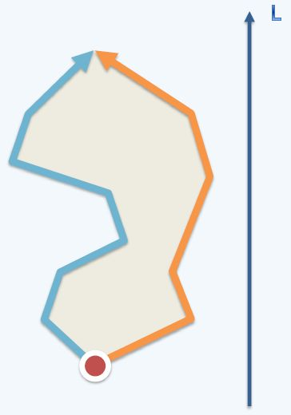
在做三角剖分时，需要先对两条链按照\(y\)轴排序。这一步花费\(o(n)\)的时间复杂度，因为两条链原本内部有序，只需要做归并即可。于是得到了下面的图：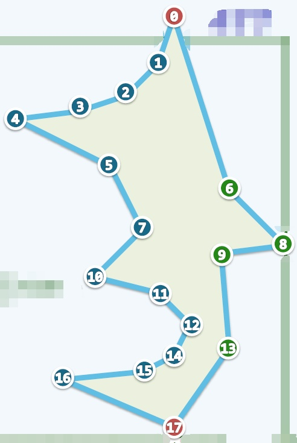
将最高的两个顶点入栈\(S\)，与凸包算法一样，这个栈也需要始终保持至少有2个元素。之后开始从上到下扫描，每次弹出栈顶的2个元素\(s,t\)，与新的点\(c\)做\(To-Left\)测试，会遇到两种情况：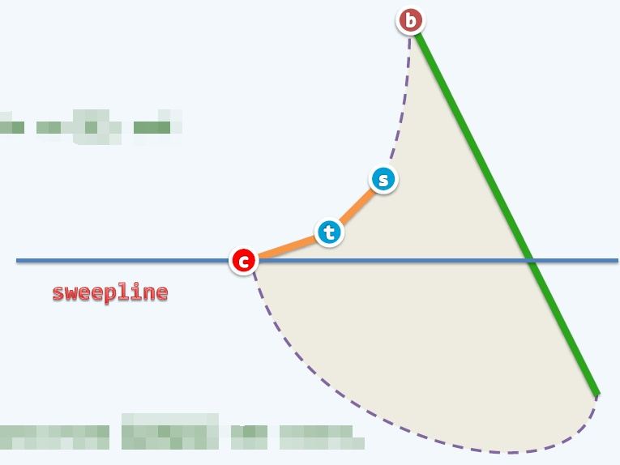
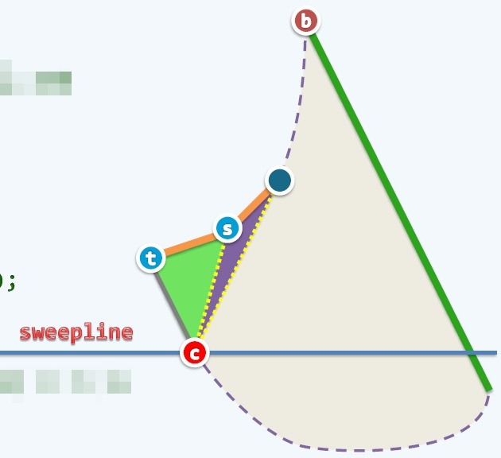 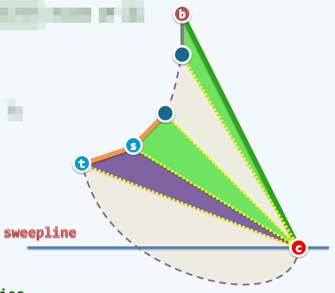